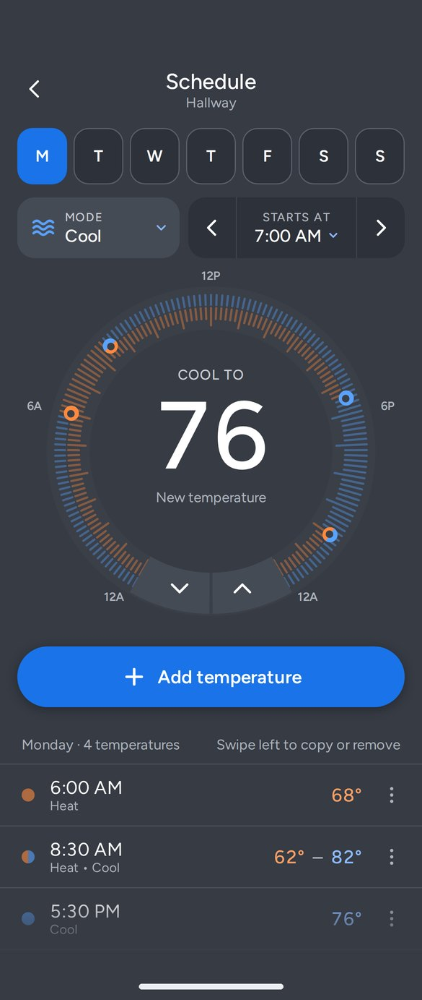
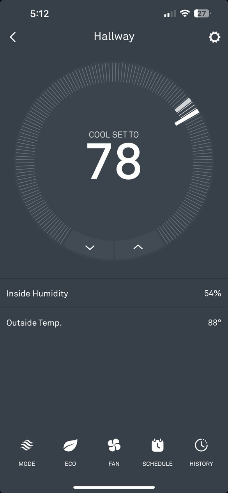
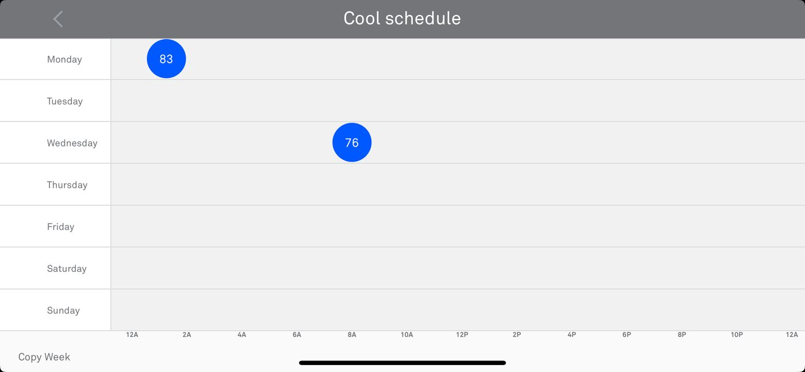
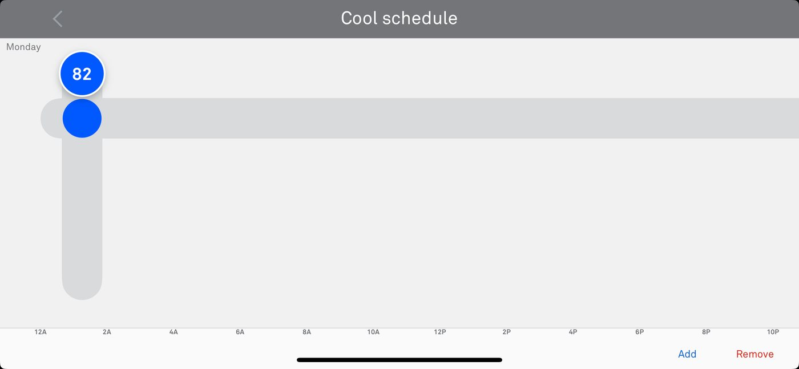
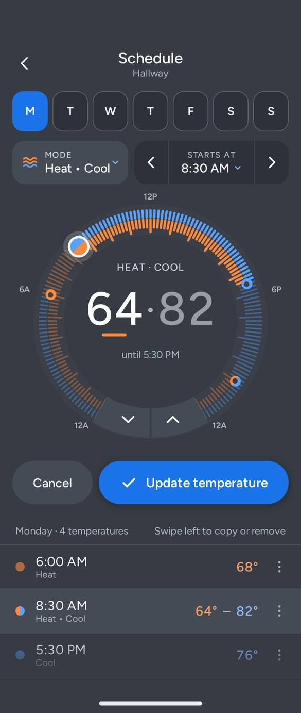
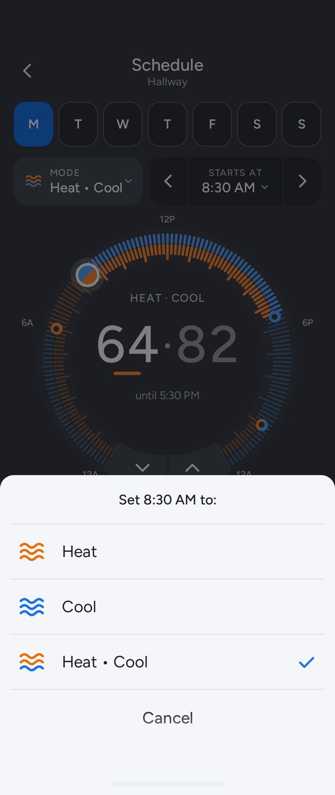
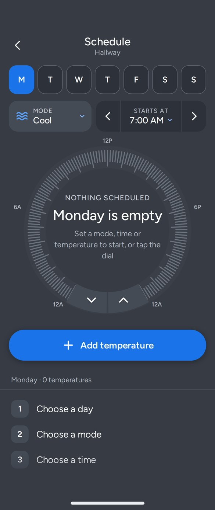
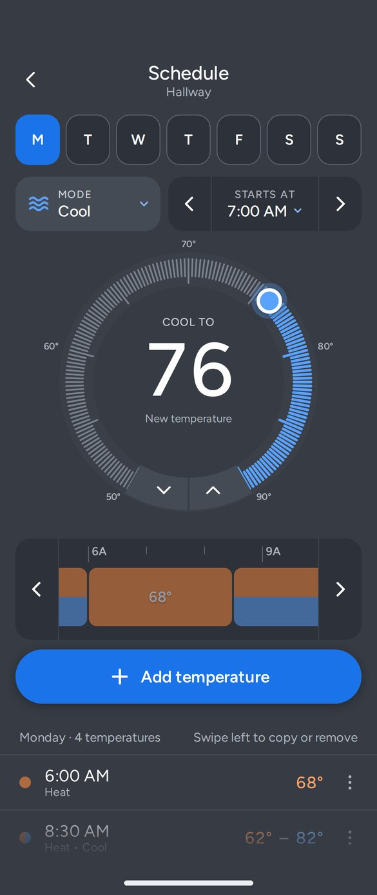
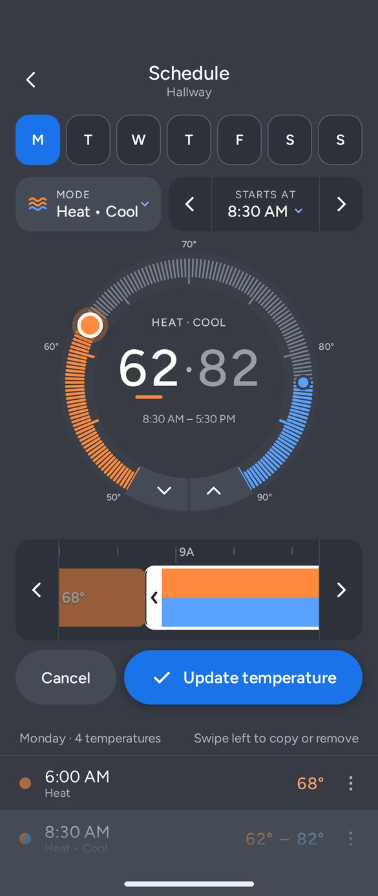

A redesign of the Google Nest scheduling flow that reuses the dial people already know, so setting a week of temperatures feels like setting one.


As a Nest user, I can change the temperature in seconds. But tapping Schedule turns the phone sideways into a blank grid that works nothing like the dial.
Adding a temperature means finding a small text link, dragging a bubble along a crosshair, and repeating the whole thing in a separate schedule for heating.


The rest of the app is portrait. Scheduling is the only place the phone has to turn.
“Add” and “Remove” are text links well under the 44 × 44 px minimum, in the corner farthest from a thumb.
Two separate schedules, with no way to set a heat-and-cool range for part of the day.
Dragging bubbles on a crosshair shares nothing with the dial people use every day.
Reuse the ring, chevrons and big number from the home screen.
Every control meets the minimum touch target, most go well past it.
Stay in the same orientation as the rest of the Nest app.
Nest’s slate background, orange for heat and blue for cool.

The ring maps the day from midnight at the bottom left, through noon at the top, to midnight at the bottom right. Each scheduled temperature is a dot you can tap, drag, or place by tapping anywhere on the ring.
The chevrons at the bottom work exactly like they do on the home screen. Mode and start time sit in one row above the dial, away from the ring so older users can hit them without touching the dial by accident.
Each temperature keeps its own mode, so a day can mix Heat in the morning, a Heat • Cool range during the day, and Cool at night.




The second direction keeps the dial for what people already use it for: temperature. The day moves into a scrollable timeline, one hour per 60 px, so each 15-minute step is a real distance for a finger.
Selecting a block puts a trim frame around it, borrowed from how people cut a video on their phone. Handles stop before they run into a neighbor, and they respond to arrow keys for anyone not using touch.
These are the working prototypes. Tap a day, drag a dot around the dial, open the mode menu, swipe a row left, or scroll Option B’s timeline.
I built the prototype and then worked through it screen by screen. These are the changes that mattered most, in the order I made them.
The first version had Add, Remove and Copy in a bottom bar. Add moved to a full-width button under the dial; Copy and Remove moved to a swipe on each row, with a ⋯ button for anyone who can’t swipe.
The dot being edited became larger and filled, with a glow. Scheduled dots became small rings, so the two never look alike.
A full orange background matched Nest’s heating screen, but white small text on that orange measured about 3.1:1, below the 4.5:1 standard. The slate background came back and color moved to the dial.
A half-orange, half-blue button for Heat • Cool was hard to read. Every call to action now uses one blue, and orange and blue only ever mean heat and cool.
Switching modes used to swap the whole schedule. Now each temperature keeps its own mode, and switching only changes the one being edited.
Arrows inside the ring were too close to it for older users. They moved to a Starts At control, with a dropdown of every time and any time allowed.
Tapping a scheduled temperature now switches the button to Update, with Cancel. Leaving with unsaved changes asks first: Save, Discard or Keep editing.
Setpoint is an HVAC term. Temperature is what people picture: “68 at 6 AM.”
Nest’s heating orange behind white body text measures about 3.1:1. That’s fine for the big temperature number, but below the 4.5:1 AA minimum for small text, which is why the redesign keeps the slate background.
A task-based test with current Nest owners: build a weekday schedule in each direction and compare time and errors.
Check reach, tap accuracy and label size with people over 65, the group most likely to struggle with the current grid.
Most households repeat weekdays. Test whether “Copy to weekdays” should appear right after the first day is set up.